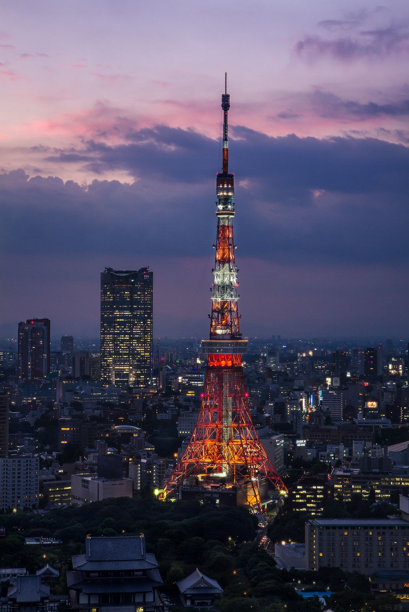
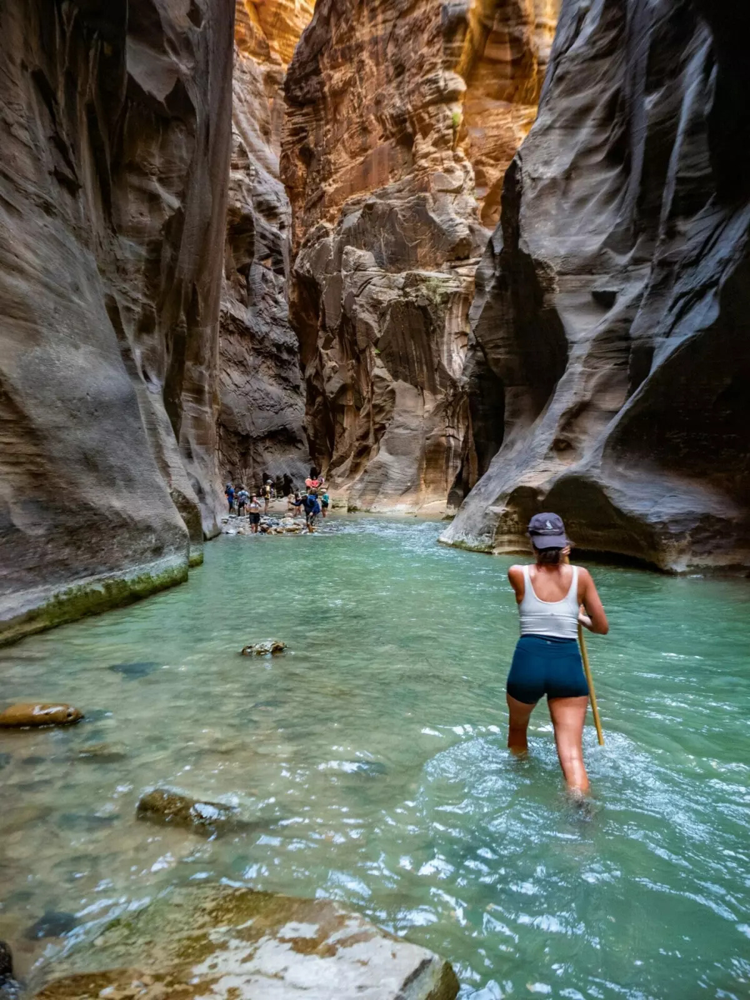
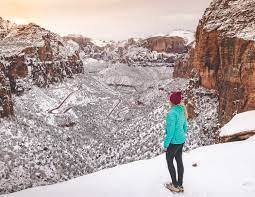
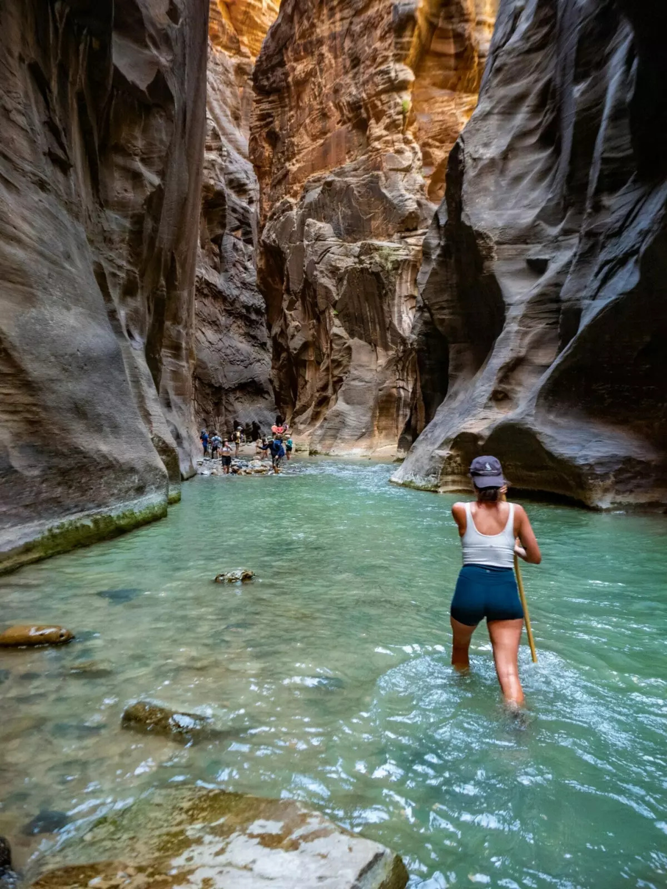
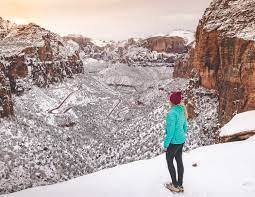

Toyko
Geographical Location: Asia
Tokyo, originally named Edo, emerged in 1603 as a fishing village. It quickly gained political power after a Shogunate, or dictatorship, took control of the area. Today Tokyo and its immediate surroundings are home to the most populated metropolitan area, with a staggering 37 million people residing in the region. Tokyo is also home to the largest urban economy in the world, and leads Japan in business and industrial economies. Tokyo is home to 23 special wards - areas like municipalities.These areas have increased monetary control over their immediate areas, with political powers such as their own mayor and assembly. Being the cultural, political, and business center of Japan, Tokyo is also home to a great public transport system. The city has two of its own commercial airports, as well as a super-express railway.
Read More...Photo Gallery



Seoul, South Korea


Geographical Location: Asia
Seoul is the capital of South Korea and it is a city enshrined in history. The Han river runs through Seoul, dividing it into two parts. Additionally, there are many mountains in and around Seoul, making it so the city has a lot of hills. Seoul is the perfect blend of modern and historical with five royal palaces and several shrines. Additionally, there are plenty of fun shopping areas in Seoul such as Hongdae, Insadong, and Gangam. Lastly, Seoul is a city of cafes with one on almost every block and several fun cafe experiences to try out, especially in Yeonnam.
Read More...Photo Gallery


Barcelona

Barcelona is located on the northeastern coast of Spain and is the capital of Catalonia. Barcelona is home to 1.6 million people and contains multiple different historical landmarks and interesting architecture.
Barcelona is famous for its notable architects including Antoni Gaudí and Lluís Domènech i Montaner. These architects built La Sagrada Familia, Park Guell, and Palau de la Música Catalana which are among the most famous constructions in Barcelona. Both architects are famous for their Modernisme style buildings notable for their distinct colors and organic shapes. Barcelona has a rich cultural heritage with a blend of Gothic and Modernist architecture, making it a city with a unique charm. Its vibrant street life, beautiful beaches, and delicious cuisine attract tourists from all over the world.
Read More...Photo Gallery


Nanjing

Nanjing is a popular city full of Chinese history and old traditional southern kinds of agriculture. As a northern people from China, Nanjing was the first city that I traveled to the region south of the Yangtze River. Confucius Temple - Qinhuai River is the most famous place to show the beauty of Nanjing.
Confucius temple has many traditional temple architectures inside and many small shops offering traditional Nanjing specialties and popular restaurants. There are also numerous colorful traditional lanterns that make the night along the Qinhuai River more gorgeous. Visitors can take the "Hua Fang" (a special kind of boat) to travel around the river and enjoy the entire scenery. Nanjing's rich cultural heritage and its beautiful blend of traditional and modern attractions make it a must-visit destination in China. The city's historical significance and picturesque landscapes along the Qinhuai River make it a perfect place for cultural exploration.
Read More...Photo Gallery


Florence


Geographical Location: Europe
Florence is located north of Rome and is the capital of Italy’s Tuscany region. One of its most iconic landmarks is the Duomo, a cathedral with a terracotta-tiled dome engineered by Brunelleschi. It is also home to the Uffizi gallery, which hosts Michelangelo’s famous “David” sculpture.
Florence is the capital city of the region of Tuscany in Central Italy. It is also the most populated city in Tuscany, with 360,930 inhabitants in 2023, and 984,991 in its metropolitan area. Florence was a center of medieval European trade and finance and one of the wealthiest cities of that era. It is considered by many academics to have been the birthplace of the Renaissance, becoming a major artistic, cultural, commercial, political, economic, and financial center. Florence's rich history and artistic legacy make it a top destination for travelers. The city is renowned for its exquisite art, architecture, and cultural heritage, with attractions like the Florence Cathedral and Uffizi Gallery drawing visitors from around the world.
Read More...Photo Gallery


San Francisco

Geographical Location: North America
San Francisco is a vibrant city located on the western coast of the United States. Known for its iconic Golden Gate Bridge, hilly terrain, and diverse neighborhoods, the city offers an eclectic blend of culture and natural beauty.
As one of the country's most iconic destinations, San Francisco boasts a rich history of innovation and counterculture. It's home to renowned landmarks such as Alcatraz Island and Fisherman's Wharf, as well as a thriving tech industry that continues to shape the world. San Francisco's diverse neighborhoods, culinary scene, and cultural events make it a dynamic and ever-evolving city. Whether you're exploring Chinatown, taking a cable car ride, or visiting world-class museums, there's something for everyone to enjoy.
Read More...Photo Gallery


Zion National Park

Geographical Location: North America
Zion National Park, found in southwestern Utah, spreads over 229 square miles. The park is known for its sandstone cliffs, deep canyons, and vast mesas, giving it a unique beauty that everyone should try to experience.
Along with this, Zion offers a wide variety of Flora and Fauna that differs each season, making it a hot destination all year round. With over 112 trails available for hiking, walking, and even camping, people from all over the world are traveling to Zion to see just how amazing it truly is. The trails range from riverside walks to hikes that have you scaling long bluffs to reach a peak, providing something for every outdoors enthusiast to enjoy. However, it's important to be aware that there are potential dangers associated with these trails, so all hikers should read and learn about them before embarking on their expedition.
Read More...Photo Gallery


 


